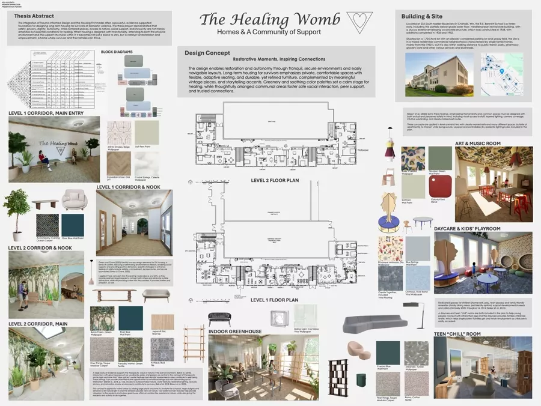
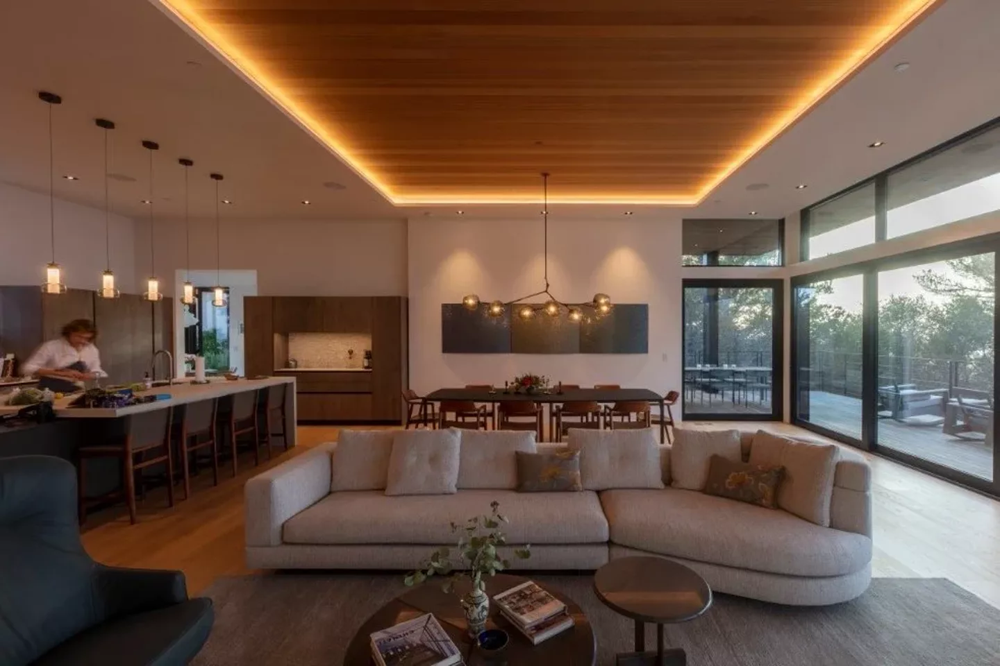
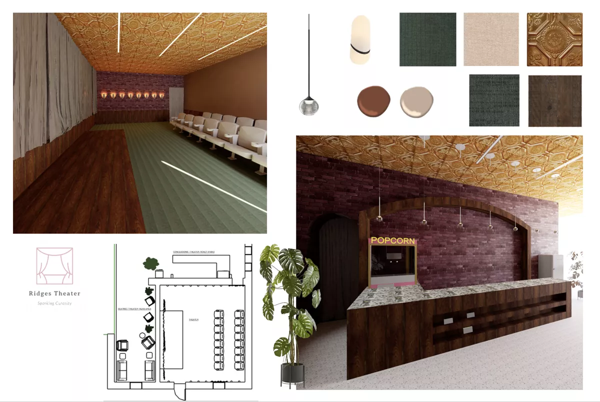
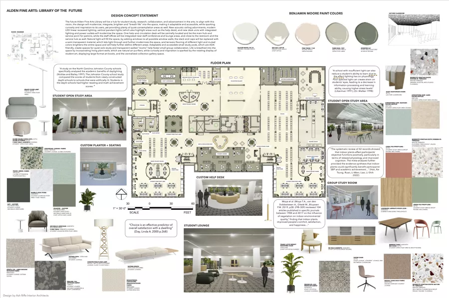
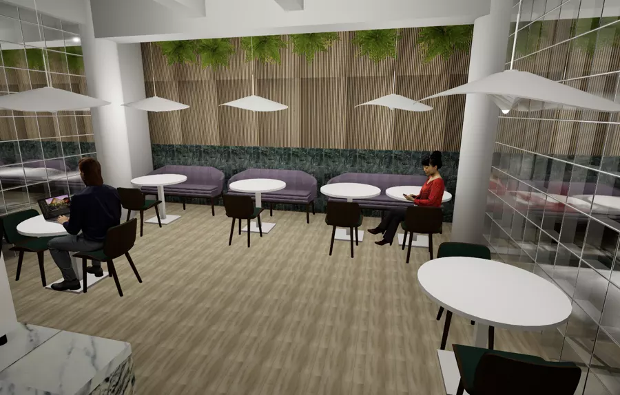
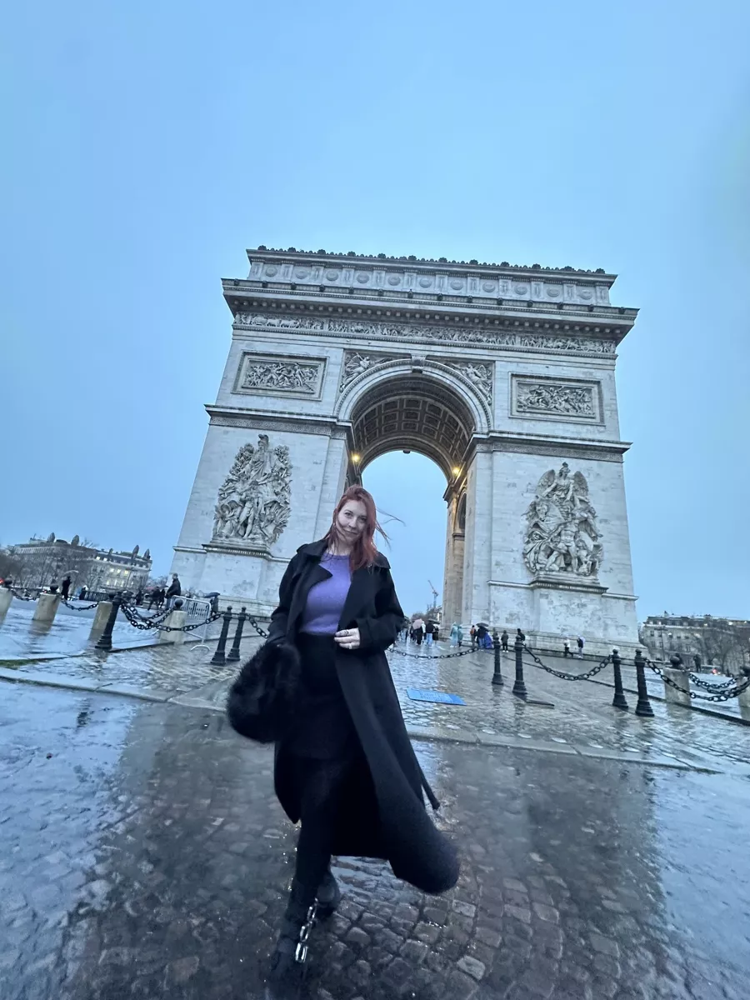

01
The Healing Womb
Housing Design · Concept
Long-term housing for domestic violence survivors, designed around restoration and autonomy: tranquil environments, adaptable seating, vintage accents, and communal areas for peer support.

Interior Architecture · Seattle, WA
Interior architecture for homes and spaces in Seattle. Considered, livable, and made to last. Built around how you actually live.
View the work →

10
Years in luxury showrooms
7
Pillars of design philosophy
2026
BFA, Interior Architecture
SEA
Based in Seattle, WA
Residential and commercial projects, from first sketch to finished room. See all seven →
01
Housing Design · Concept
Long-term housing for domestic violence survivors, designed around restoration and autonomy: tranquil environments, adaptable seating, vintage accents, and communal areas for peer support.

02
Academic · Concept
A university fine-art library modernization: living plant walls, rotating student art, ADA study pods, terrazzo floors, and daylight pulled deep into the stacks.

03
Performing Arts · Concept
A palette that holds up under stage light and house light alike: terra cotta, mauve brick, and brushed copper threading through every surface.
04
Commercial · Concept
A commercial childcare interior that takes color seriously without shouting: warm wood, soft seating, and planting overhead.

Design Ethos
“Design as a lasting conversation between past, present, and future: honoring history, respecting the environment, and elevating daily living.”
Ash Riffe
Every project rests on the same foundations: the principles that decide what stays, what goes, and why.
01
Enduring quality, subtle luxury, proportion and restraint.
02
Nature, daylight, organic forms, and indoor-outdoor harmony.
03
Material honesty, durable essentials, adaptive reuse.
04
Color as narrative, artistic collaboration, playful restraint.
05
Contextual integrity, delicate modernization, storytelling through materiality.
06
Humanity at center, clarity of intent, transparent process.
07
Integration over imposition, quiet confidence.

About
Ash Riffe is a Seattle-based interior architecture designer, graduating with her BFA from Ohio University in 2026. Her first memory of architecture is Frank Lloyd Wright's Lowell and Agnes Walter House in small-town Iowa, at age seven. The pull never let go.
Nearly a decade in Seattle's luxury furniture world (B&B Italia, Inform Interiors, Codor Design, J. Garner Home, Alchemy Collections) taught her how materials, makers, and clients actually work together. Her spaces are classic with an edge: clean lines, honest materials, collected and layered.